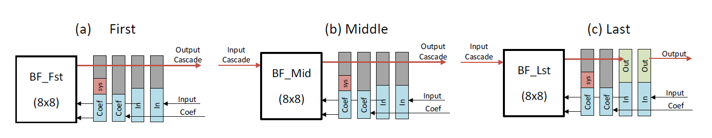
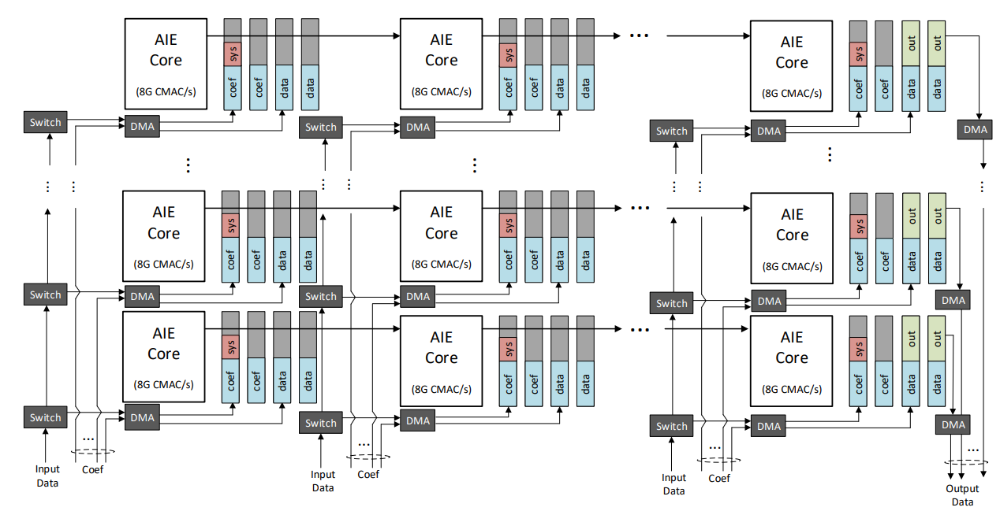

Building the Design¶
Create the AI Engine graph application by running the make step as follows:
make graph
or
mkdir build
cd build
aiecompiler -v \
--pl-freq=400 \
src/test_bf_3x.cpp \
-include=src \
-include=src/kernels \
-include=src/inc \
--platform=../Module_01_Custom_Platform/sw/build/vck190_v1_0/export/vck190_v1_0/vck190_v1_0.xpfm \
-workdir=Work
Options Table¶
|Switch|Description| | — | — | |-v | Verbose output. | |–pl-freq=400| Sets the PLIO interface to the AI Engine to 400 MHz. All the AXI4-Stream interfaces from the PL kernels to the AI Engine will operate at this frequency. | |-include=<dir> | Includes the src directory, the src/kernels directory, and the src/inc directory.| |–platform=<platform>.xpfm| The custom platform created in Module 01.| |-workdir=Work| Specifies the Work directory name.|
Dependencies¶
|Filename|Description| | — | — | |src/test_bf_3x.cpp|AI Engine Application. | |src/inc/include.h|Include file that contains global variables used in the AI Engine subgraphs.| |src/inc/kernels.h|Contains function prototypes for the AI Engine beamforming kernels. | |src/include/subsys.h|Contains the subgraph definitions for the bfCascadeChain, DL64A32L, and UL64A32L.| |src/kernels/bf8x8_fst.cc|Beamforming kernel definition for the first kernel in a bfCascadeChain graph. You only need to instantiate one of these in a bfCascadeChain graph. | |src/kernels/bf8x8_lst.cc|Beamforming kernel definition for the last kernel in a bfCascadeChain graph. You only need to instantiate one of these in a bfCascadeChain graph.| |src/kernels/bf8x8_mid.cc|Beamforming kernel definition for the middle kernel in a bfCascadeChain graph. You can instantiate multiple middle kernels in a bfCascadeChain graph.|
Build Products¶
|Filename|Description| | — | — | |build/Work/| Output directory of AIE Compiler.| |AIECompiler.log|AIE Compiler log file. | |libadf.a|Compiled AI Engine design graph. | |NOC_Power.xpe|Xilinx Power Estimator file for the NoC. |
Introduction¶
AI Engine Kernels, Graphs, and Applications¶
AI Engine kernels are computation functions that work together to build data flow graphs. Multiple subgraphs can be stitched together into larger high-level graphs. This beamforming tutorial uses three beamforming kernels that implement matrix multiplication functions. These kernels are strung together to form the downlink and uplink subgraphs. Three uplink and three downlink subgraphs are instantiated in a high-level data flow graph TEST_BF defined in test_bf.h. The AI Engine application contains an instance of the TEST_BF graph and can be compiled and simulated using the AI Engine tool chain.
AI Engine Kernels and Graphs¶
The fundamental beamforming kernel computes a complex matrix multiplication on a (8x8) coefficient matrix times a (8x1) input data matrix which results in a (8x1) output data matrix. The beamforming kernel repeats the matrix multiplication computation on as many (8x1) input data matrices as are fed into it.
When the beamforming kernel computes the matrix multiplication, the results are only partial summations. The beamforming kernel then sends the partial results to identical kernels in a cascade chain for further accumulation and multiplication into a final accumulated (8x1) output data matrix. A real 5G system is determined by the number of layers (M) and number of antennas (N). For this beamforming tutorial, M is determined by the number of inputs into the chain (that is, the length of the input data matrix (8) times the number of kernels in a cascade chain). N is determined by the number of final accumulated outputs at the end of the chain (8) times the number of chains in your design.
This beamforming kernel comes in three flavors: bf8x8_fst, bf8x8_mid, and bf8x8_lst. Review the source files defined in the src/kernels/ folder.

The kernels are strung together into a cascading chain, and they are named first, middle, and last depending on their location in the cascading chain. All three of these kernels implement the matrix multiplication function and only differ in the input and output interfaces. The first kernel in the cascading chain does not have a cascading input because it is the first kernel in a chain. The middle kernel has both a cascading input and a cascading output. The last kernel has both a cascading input and output, but writes the output to local memory instead of the cascading bus.
All three beamforming kernel types start by loading the input data and input coefficient data from PL kernels. The first beamforming kernel computes the matrix multiplication, computes the first partial summation, and sends it to a middle kernel using an output cascade. The middle kernel reads the partial summation from the previous kernel, computes its own matrix multiplication on the accumulated data, and generates its own output cascade. This output cascade becomes the input cascade to either another middle kernel or the last kernel. The last kernel does the final matrix multiplication on the accumulated data and writes the final results to a PL kernel. The entire chain of beamforming kernels repeats these calculations on new input data for 12 subcarriers in total.
Cascading Chain Subgraph¶
The subgraph bfCascadingChain is used to create a cascading chain of beamforming kernels. Review the graph definition in the src/inc/subsys.h. It is a templated subgraph with parameters xoff, yoff, and len. The xoff and yoff parameters define the coordinate of the leftmost AI Engine. The len parameter specifies the length of the cascading chain (len-2 = the number of middle kernels in a chain). The port arrays din[len] and cin[len] are the data input and coefficient input ports. The size of these arrays is determined by the len parameter (so, we need one data input port and one coefficient input port for each kernel in the cascade chain). Additionally, there is one output port out for the final output in the last kernel.
You can create subgraphs that contains multiple cascading chains where each chain can be customized to contain any number of beamforming kernels. 
Downlink Subgraph¶
The subgraph DL64A32L is a 64-antenna-32-layer downlink subgraph. Review the graph definition in the src/inc/subsys.h. It consists of eight bfCascadingChain subgraphs of length four beamforming kernels. This subgraph has four data input ports and 32 coefficient input ports. All eight chains get the same input data. Each chain gets four of the coefficient input ports each. There are eight output data ports for the output of each chain.
Uplink Subgraph¶
The uplink subgraph UL64A32L is the reverse of the downlink subgraph. Review the graph definition in the src/inc/subsys.h It consists of four bfCascadingChain subgraphs each of the length of eight beamforming kernels. This subgraph has eight data input ports and 32 coefficient input ports. All four chains get the same input data. Each chain gets eight of the coefficient input ports each. There are four output data ports for the output of each chain.
Test Beamforming Graph¶
The test beamforming TEST_BF graph is the high-level AI Engine graph that contains three instances of the DL64A32L subgraph and three instances of the UL64A32L subgraph. Review the graph definition in the src/test_bf.h.
AI Engine Application¶
Review the test_bf_3x.cpp AI Engine application. Note that all the input and output PLIO ports for the TEST_BF graph are instantiated. Next, instantiate the virtual platform and connect the virtual platform’s src and sink arrays to PLIOs.
Each input PLIO port has a *.txt file relative to the current directory that sources the input platform data. Each output PLIO port specifies a .*txt file to sink the output platform data. The beamforming kernels expect cint16 data inputs, so the input data *.txt files are organized as four columns per row where each column represents a 16-bit real or imaginary value.
Lastly, the AI Engine application uses the Run Time Graph Control API with an infinite graph execution. The graph dut is declared from the TEST_BF graph class. In the main function, this graph object is initialized and run. The init() method loads the graph to the AI Engine array at specific AI Engine tiles. This includes loading the ELF binaries for each AI Engine, configuring the stream switching for routing, and configuring the DMAs for I/O. It leaves the processors in a disabled state. The run() method starts the graph execution by enabling the processors. This graph runs for one iteration. The run-time event API for performance profiling is used to calculate the throughput of two of the output ports.
Sending Data to the Beamforming Kernels¶
AI Engine kernels consume input blocks of data and produce output blocks of data. There are two data access mechanisms kernels can do: window-based access or stream-based access. The beamforming kernels access data with the window-based access mechanism.
AI Engine Kernels Parameters¶
The view that a kernel has of incoming blocks of data is called an input window. Input windows are defined by type, to define the type of data contained within that window. The beamforming kernels expect an input window carrying complex integers where both the real and imaginary parts are 16 bits wide for the input data (x_input) and input coefficient (c_input) parameters.
void bf8x8_fst( \
input_window_cint16 * restrict c_input, \
input_window_cint16 * restrict x_input, \
output_stream_cacc48 * cascadeout \
);
The view that a kernel has of outgoing blocks of data is called an output window. The last beamforming kernel (bf8x8_lst) shows a declaration of an output window carrying complex integers where both the real and imaginary parts are 16 bits for the output data (data_out) parameter.
void bf8x8_lst( \
input_window_cint16 * restrict c_input, \
input_window_cint16 * restrict x_input, \
input_stream_cacc48 * data_in, \
output_window_cint16 * restrict data_out
);
AI Engine Subgraph Window Connections¶
The size of the window (in bytes) is declared with the connect<window<WINDOOW_SIZE>> construct. The bfCascadeChain data flow graph establishes the window connections between the input and output ports of the graph and the input ports of the beamforming kernels.
// Make connections for input data and coefficient
for(unsigned i=0;i<len;i++){
connect<window<IN_COEF_WINSZ>>(cin[i], core[i].in[0]);
connect<window<IN_DATA_WINSZ>>(din[i], core[i].in[1]);
}
// Connect Output
connect<window<OUT_DATA_WINSZ>>(core[(len-1)*(1-(yoff&1))].out[0], out);
The window sizes of the coefficient, data, and output ports are as follows:
|Window Size Name|Window Size (bytes)| Number of 32-bit complex data samples| | — | — | — | |IN_DATA_WINSZ | 3072 | 768 | |IN_COEF_WINSZ | 2048 | 512 | |OUT_DATA_WINSZ | 3072 | 768 |
AI Engine Application Data Files¶
Lastly, you need to send the actual input data to the beamforming kernels and receive the output data from the beamforming kernels. This is accomplished through the PLIOs instantiated in the AI Engine application. Each PLIO specifies a 64-bit PL interface with an associated input or output data file. This means each row in the data files can store two (32-bit) complex data samples. An AI Engine kernel that is expecting a cint16 with a 64-bit PLIO needs a data file organized as four columns per row, where each column represents a 16-bit real or imaginary value.
<16-bit real> <16-bit imaginary> <16-bit real> <16-bit imaginary>
Simulating the AI Engine Graph Application¶
Next, conduct a System C simulation of your AI Engine application using the AI Engine System C Simulator (aiesimulator). This simulator can model the AI Engine array, global memory (DDR memory), and network-on-chip (NoC). Invoke the AI Engine System C simulator with the following make command:
make sim
or
cd build;
aiesimulator –pkg-dir Work –output-dir aiesimulator-output |& tee aiesimulator-output/aiesim.log
The aiesimulator executes the AI Engine application where the AI Engine graph is initialized, run, and terminated by the control thread expressed in the main function. By default, the dut.run() option specifies a graph that runs forever. In our AI Engine application, dut.run(NITER) is specified, where NITER = 1. This runs the graph for one iteration. This means the simulation has the AI Engine receiving “one block” of data samples through the input ports, and the AI Engine outputs “one block” of data samples through the output ports. The block size of the data input, coefficient input, and data output ports is specified by the IN_DATA_WINSZ, IN_COEF_WINSZ, and OUT_DATA_WINSZ global variables.
Run-Time Event API for Performance Profiling¶
Additionally, in the AI Engine application, the event::start_profiling and event::read_profiling API calls are specified. These calls configure the AI Engine to count the accumulated number of clock cycles. Because we know how much data is coming out of the AI Engine (OUT_DATA_WINSZ), and using this API gets us the number of clock cycles its takes to receive all the output data, we can calculate the port throughput (bytes per second). This calculation is done in the AI Engine application and printed to the console during simulation. Note that the longer the data is simulated, the higher the throughput accuracy. Currently the number of iterations is chosen as 20.
Open the build/aiesim.log file to view the following throughput calculations for two of the output PLIOs:
...
DLBF Output0: Throughput 8.57765e+08 Samples/s, i.e. 3.43106e+09 Bytes/s
ULBF Output0: Throughput 8.6297e+08 Samples/s, i.e. 3.45188e+09 Bytes/s
...
Conclusion¶
5G NR massive MIMO systems require intensive computation for matrix multiplication. It is shown that three 100 MHz 32-layer-64-antenna 5G NR beamforming systems can be implemented on 192 AI Engines with three kernels with slight differences. The proposed matrix multiplication implementation on AI Engine has a flexible and scalable architecture applicable to a wide range of use cases including but not limited to 5G wireless.
References¶
AI Engine Documentation: AI Engine Programming (to learn more about AI Engine graph and kernels)
Versal ACAP AI Engine Intrinsics Documentation (UG1078) (lists of all the intrinsic APIs and data types supported in the current release)
AI Engine Documentation: Adaptive Data Flow Graph Specification
© Copyright 2021 Xilinx, Inc.
Licensed under the Apache License, Version 2.0 (the “License”); you may not use this file except in compliance with the License. You may obtain a copy of the License at
http://www.apache.org/licenses/LICENSE-2.0
Unless required by applicable law or agreed to in writing, software distributed under the License is distributed on an “AS IS” BASIS, WITHOUT WARRANTIES OR CONDITIONS OF ANY KIND, either express or implied. See the License for the specific language governing permissions and limitations under the License.